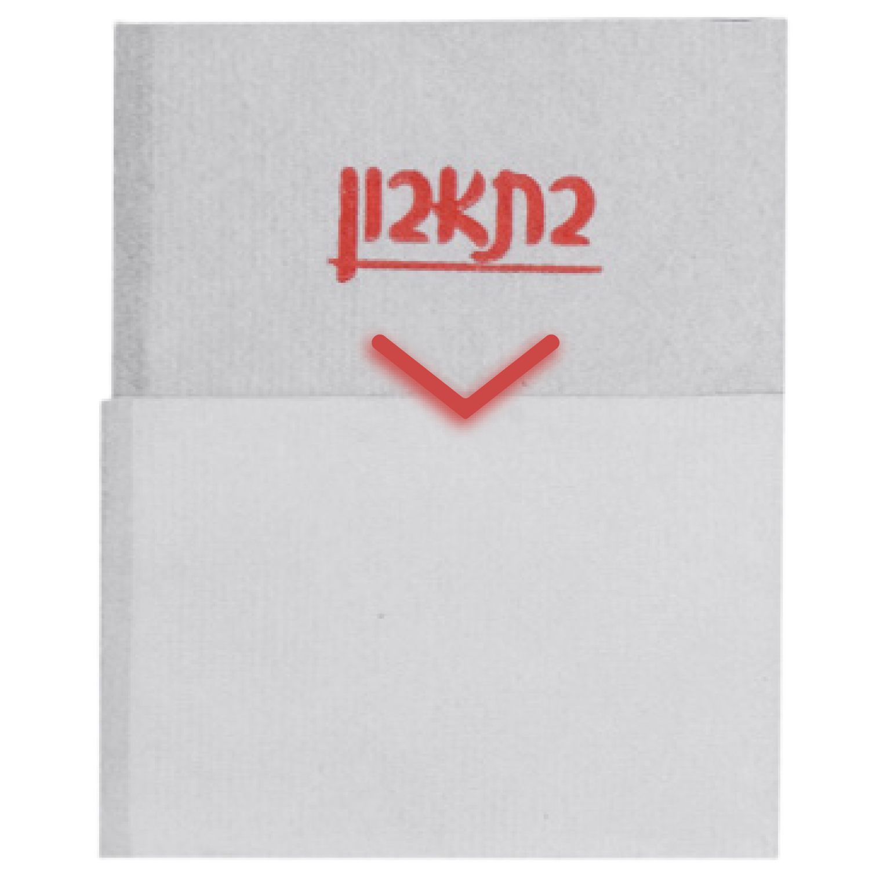

דף הבית
ספר מתכונים
דף הבית
ספר מתכונים
אוכל לפי יבשות
ירידי אוכל בעולם
אודות
צרו קשר
חיפשתם מתכון מנצח כמו של סבתא?

↑
ממליצים לכם לנסות את המתכונים הבאים
שבעזרתם השולחן שלכם יהפוך לדוכן רחוב מהולל
למי שרוצה להוריד את הספר כי העיניים סוגרות עליו ⬇️